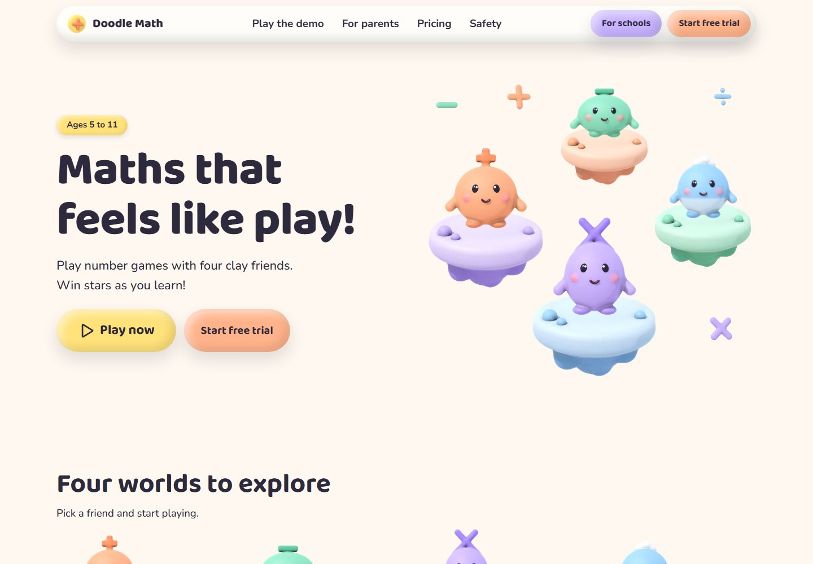

Design exploration / Claymorphism
Doodle Math
A playful maths world with clay mascots, adaptive questions, and a thoughtful grown-up experience.

The idea behind the interface.
A marketing site and playable demo for a fictional maths app for ages five to eleven. Puffy clay surfaces and four generated mascots create the child-facing identity, while the parent and school journeys use clear pricing, curriculum information, and safety explanations.
Inside the build
- An eight-question demo adapts difficulty to answers and supports touch, mouse, and keyboard without saving child data.
- A grown-up gate separates the game from adult routes, with narration controls and reduced-motion alternatives.
- A curriculum explorer, family/school pricing, trial forms, and demo bookings share tested logic; first-party metrics avoid tracking identifiers.
Scope & context
Concept project. Characters are procedurally rendered and narration is placeholder audio. The app and its family testimonials are fictional.